同列可比
同一列使用同一份 sinogram。SIRT 與 TV 共享端點外框、值域、門檻與凸化規則。
RECONSTRUCTION COMPARISON · 2026-09-30
單凸體與雙凸體都比較真值、FBP、SIRT、TV 與幾何包絡法。紅線只供評估。
01 · SINGLE CONVEX BODY
橢圓、三角形與不規則六邊形皆使用 8 個無雜訊角度。每列使用同一份投影資料。
模型 未知物體 D 非空、緊緻、凸且有內部，密度為 1。資料無雜訊；detector 覆蓋完整投影，每個量測方向至少有一筆正值及兩側相鄰外點。
重建 端點建立 P0，必存弦段建立 Q0。每輪由 Q 與實測弦長找出確定外點、收縮 P，再重算必存弦段以擴張 Q。四輪後輸出 R=(Q+P)/2。
保證 每輪保持 Q⊆D⊆P，因此 dH(D,R)≤½dH(P,Q)。


SAME SINGLE-BODY CASE
slender-r37，8 angles。SIRT 與 TV 使用端點外框 P0 作遮罩、值域 [0,1]、固定 0.5 門檻，再取最大連通區的凸包。
| 角度數 | FBP 0.5 | SIRT 500 | TV 1500 | 包絡中點 R | 保證界 |
|---|---|---|---|---|---|
| 8 | 0.025129 | 0.008285 | 0.008285 | 0.004068 | 0.005817 |
全部方法使用相同 Radon 資料，Δs=0.01。幾何法做四輪更新；每個方向最多使用 16 條具有內弦的射線作外點排除。真值只用於事後 HD 評估。浮點包絡界未經區間算術認證。方法與證明 · 橢圓 SIRT／TV 數值 · 多邊形五欄數值 · 包絡數值。
02 · TWO CONVEX BODIES
三例皆使用 8 個無雜訊角度。像素法共享相同初始外框與 0.5 分割規則；幾何欄顯示中點輸出，紅線是真值、藍線是外包絡、黃線是內包絡。
corners_0三角形＋四邊形


thin_0低厚度凸體


small_gap_0可初始化成功例


SAME THREE DEVELOPMENT CASES
這是三個先前已檢視且成功初始化的開發案例。幾何法三例最低，但不足以推出對未知案例或其他參數設定的普遍優勢。
| 方法 | 中位數 | 最大值 |
|---|---|---|
| 幾何包絡法 | 0.001257 | 0.003025 |
| FBP 0.5 | 0.101903 | 0.291328 |
| SIRT 500 | 0.021102 | 0.024190 |
| TV 1500 | 0.033196 | 0.040913 |
FAILURE ACCOUNTING
四例使用同一份 8 角度總 sinogram。FBP、SIRT、TV 只使用總端點外框；第五欄先搜尋未知分離線，再做雙凸體包絡。
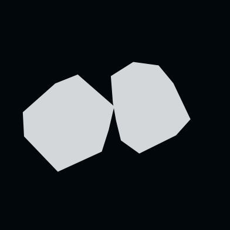
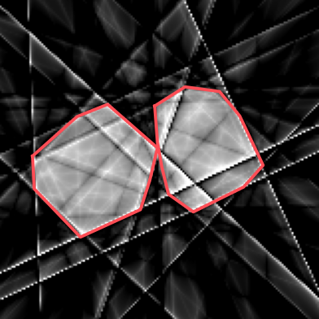
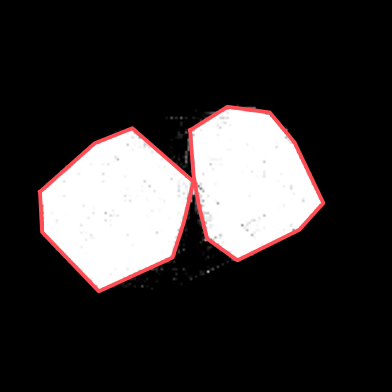
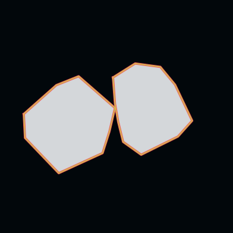
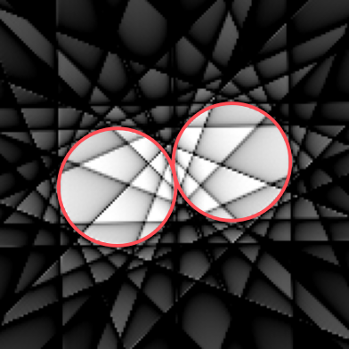
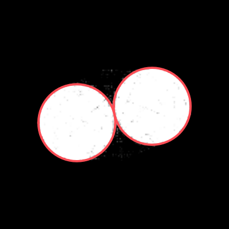
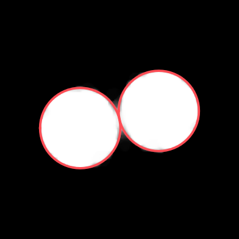
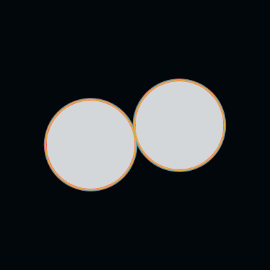
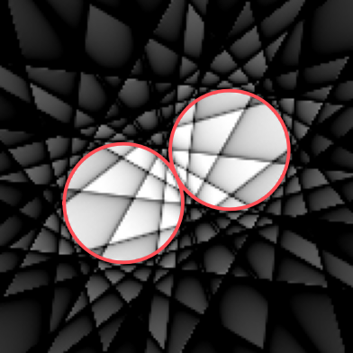
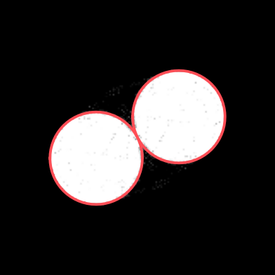
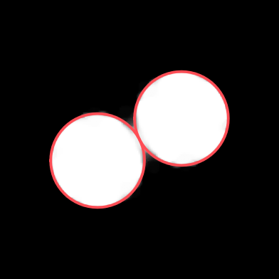
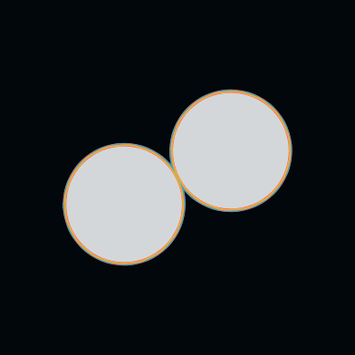
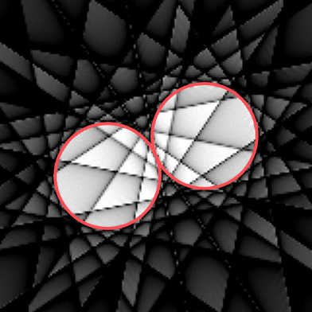
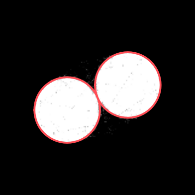
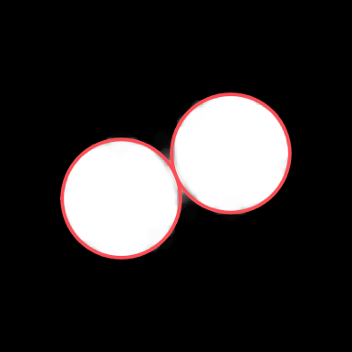
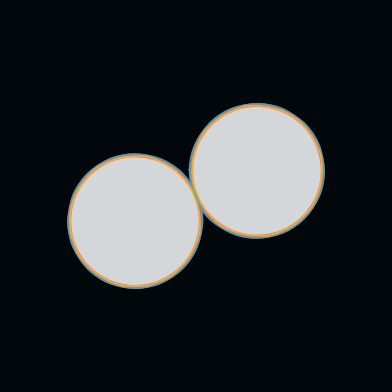
FBP、SIRT、TV 的「聯集 HD」直接比較 257 × 257 網格上的真值聯集與 0.5-level 前景聯集；區塊數只另外描述是否成功分裂。像素間距為 0.015625。幾何欄仍列連續多邊形的 component HD 與條件式界。unresolved_gap_0 的最佳分支切入真體 8.16×10−5，因此 0.005688 不能當成誤差認證。完整數值
READING THE FIGURE
同一列使用同一份 sinogram。SIRT 與 TV 共享端點外框、值域、門檻與凸化規則。
單凸體與雙凸體不是同一案例集，誤差只能在各自實驗協定內解讀。
紅色真值邊界只在完成重建後用於視覺疊圖與誤差評估。
目前已實跑 FBP、SIRT 與指定 TV；DALM、TVR-DART 尚未取得可填入的誤差。
數值來源：單凸體 single_envelope_metrics.json、single_five_column_metrics.json；雙凸體 submission_gate_20260923、quick_baselines_20260929。